Every convex polyhedron has two representations, one as
the intersection of finite halfspaces and the other
as Minkowski sum of the convex hull of finite points
and the nonnegative hull of finite directions. These are
called H-representation and V-representation, respectively.
Naturally there are two basic Polyhedra formats, H-format for H-representation and V-format for V-representation. These two formats are designed to be almost indistinguishable, and in fact, one can almost pretend one for the other. There is some asymmetry arising from the asymmetry of two representations.
First we start with the halfspace representation. Let be an 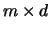 matrix, and let 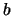 be a column -vector. The Polyhedra format (H-format ) of the system 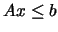 of inequalities in 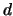 variables 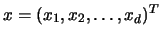 is
| various comments | ||
| H-representation | ||
| begin | ||
| 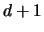 | numbertype | |
| end | ||
| various options | ||
where numbertype can be one of integer, rational or real.
When rational type is selected, each component
of and can be specified by the usual integer expression
or by the rational expression ``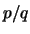'' or ``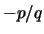'' where
and are arbitrary long positive integers (see the example
input file rational.ine). In the new 1997 format,
we introduced ``H-representation'' which must appear
before ``begin''.
There was one restriction in the old polyhedra format
(before 1997): the last rows must determine
a vertex of . This is obsolete now.
Now we introduce Polyhedra V-format. Let be represented by 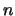 extreme points and rays as 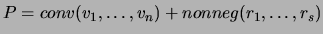. Then the Polyhedra V-format for is defined as
| various comments | ||
| V-representation | ||
| begin | ||
| 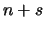 | numbertype | |
| 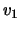 | ||
| 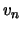 | ||
| 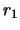 | ||
| 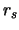 | ||
| end | ||
| various options | ||
Here we do not require that
vertices and rays are listed
separately; they can appear mixed in arbitrary
order. Before the year 1997,
the option ``hull'' was used instead of ``V-representation''
in V-format. The old option is obsolete but cdd+ still
understands this option for backward compatibility.
The reverse search code lrs has employed this new format
from version 3.2.
When the representation statement, either ``H-representation'' or ``V-representation'', is omitted, the former ``H-representation'' is assumed.
It is strongly suggested to use the following rule for naming H-format files and V-format files:
The program cdd+ does two transformations, one from an H-format to a V-format, and the reverse. While an input file (in H-format or V-format) can have redundant information, cdd+ outputs a minimal representation (in V-format or H-format).
For example, let be the following unbounded 3-dimensional
H-polyhedron given by
* file name: ucube.ine
* 3 cube without one "lid"
H-representation
begin
6 4 integer
2 -1 0 0
2 0 -1 0
-1 1 0 0
-1 0 1 0
-1 0 0 1
4 -1 -1 0
end
incidence
adjacency
input_adjacency
input_incidence
The meaning of options ``incidence'', ``adjacency'' ``input_adjacency'' and ``input_incidence'' will be explained in Section 4. After you run cddr+ (the rational arithmetic version of cdd+) or cddf+ with this input file, you will get an output file ucube.ext which is the minimal V-representation of the polyhedron:
* cdd+: Double Description Method in C++:Version 0.76 (March 17, 1999) * Copyright (C) 1999, Komei Fukuda, fukuda@ifor.math.ethz.ch * Compiled for Rational Exact Arithmetic with GMP *Input File:ine/ucube.ine(6x4) *HyperplaneOrder: LexMin *Degeneracy preknowledge for computation: None (possible degeneracy) *Vertex/Ray enumeration is chosen. *Output adjacency file is requested. *Input adjacency file is requested. *Output incidence file is requested *Input incidence file is requested. *Computation completed at Iteration 6. *Computation starts at Wed Mar 17 06:56:51 1999 * terminates at Wed Mar 17 06:56:51 1999 *Total processor time = 0 seconds * = 0h 0m 0s *FINAL RESULT: *Number of Vertices =4, Rays =1 V-representation begin 5 4 rational 1 2 1 1 1 1 1 1 1 1 2 1 1 2 2 1 0 0 0 1 end hull
The output shows that the polyhedron has four vertices 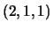, 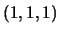, 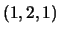, 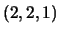 and only one extreme ray 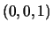. The comments contain information on the name of input file, and the options chosen to run the program which will be explained in the next section.
Now, if you run cdd+ with this output file ucube.ext, cdd+ will perform the convex hull operation to recover essentially the original inequalities. More precisely, if we make a copy ucube2.ext of ucube.ext, and run cddr+ (or cddf+) with this copy, it will create a new ucube2.ine file:
* cdd+: Double Description Method in C++:Version 0.76 (March 17, 1999) * Copyright (C) 1999, Komei Fukuda, fukuda@ifor.math.ethz.ch * Compiled for Rational Exact Arithmetic with GMP *Input File:ucube2.ext(5x4) . . . *Number of Facets = 5 H-representation begin 5 4 rational -1 0 1 0 -1 1 0 0 2 0 -1 0 2 -1 0 0 -1 0 0 1 end
It is easy to check that this H-representation is essentially the same as the one we started with, except the new one does not contain any redundant inequality and the orderings are different.
Note that this back-and-forth transformation of a polyhedron works only when a polyhedron admits a unique minimal V-representation and a unique minimal H-representation. For example, when a polyhedron is full dimensional and contains at least one vertex, it satisfies these conditions.